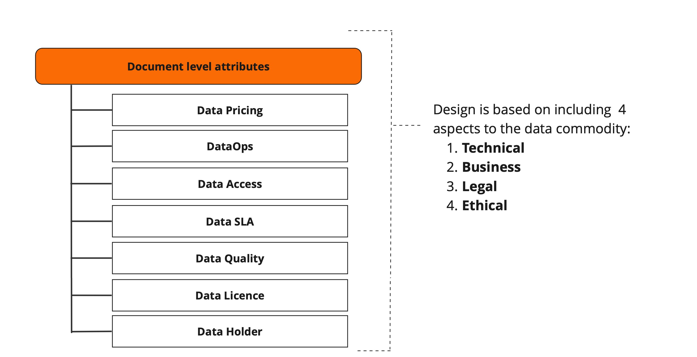

OPEN DATA PRODUCT SPECIFICATION
Forked Development Version - Component approach test
The key words “MUST”, “MUST NOT”, “REQUIRED”, “SHALL”, “SHALL NOT”, “SHOULD”, “SHOULD NOT”, “RECOMMENDED”, “NOT RECOMMENDED”, “MAY”, and “OPTIONAL” in this document are to be interpreted as described in BCP 14 [RFC2119] [RFC8174] when, and only when, they appear in all capitals, as shown here.
The specification is shared under Apache 2.0 license. Development of the specification is under the umbrella of the Linux Foundation.
DEVELOPMENT VERSION
Version source:
ODPS YAML Schema:
Editors:
Participate:
Introduction
The Open Data Product Specification is a vendor-neutral, open-source machine-readable data product metadata model. It defines the objects and attributes as well as the structure of digital data products. The work is based on existing standards (schema.org), best practices and emerging concepts like Data Mesh. The reasoning is that we reuse and proudly copy instead of reinventing the wheel. More detailed information of the origin can be found from the Open Data Product Specification homepage.
Open Data Product Specification (ODPS) changes the data product metadata model towards a standalone model, which helps to decouple data product from the systems often directly associated with it. With help of the ODPS data product can be presented and described to the customer also as such without any need for marketplace or other systems.
This version Data Contract support has been added to Open Data Product Specification. You can reference Data Contract as a URL or define Data Contract as an inline element in ODPS. Both Data Contract Specification (DCS) and Open Data Contract Standard (ODCS) supported.
Specification aims and aspects
Specification aims:
- enable interoperability between organizations, data platforms, marketplaces, and tools.
- reduce data product metadata conversions and errors between systems and organizations,
- increase the speed of designing, testing, and implementing data products.
- speed up tools development around data product design, development and management.
- enable creation of automated data product deployment with standard methods (DataOps)
- enable Everything as Code approach for SLA and Data Quality monitoring
Note! In the "Open Data Product" focus is on the latter words and the prefix 'open' refers to the openness of the standard. Any kind of connotations to open data (a different thing) are not intentional, intended, or desirable.
The specification has been designed with four major aspects of the data product in mind: 1) technical (infrastructure & access), 2) business (pricing & plans), 3) legal (licensing & IPR), and 4) ethical (privacy & mydata). The four aspects are described in 7 objects, which contain attributes and elements.

If you see something missing, described inaccurately or plain wrong, or you want to comment the specification, raise an issue in Github
Document structure
LEFT COLUMN: Navigation
The left column is navigation which enables fluent and easy movement around the specification.
MIDDLE COLUMN: Principles and components
The middle column contains detailed information about the included components and related options. This is the theory part.
Note! Mandatory elements and attributes are listed separately in the definition tables. This enables user to construct minimum viable specification more easily and fast. https://schema.org provided ready-made definitions are applied when ever possible instead of re-inventing the wheel.
RIGHT COLUMN: Examples
The right column contains YAML formatted examples of how the specification is used. In the future other output formats are added on request basis. YAML can easily be converted to JSON if needed.
Example of YAML formatted snippet from the Open Data Product Specification:
dataQuality:
declarative:
- dimension: accuracy
displaytitle:
- en: Data Accuracy (percent)
Document level attributes
Here's the list of attributes which can occur at the document root level. In the following description, if a field is not explicitly REQUIRED or described with a MUST or SHALL, it can be considered OPTIONAL. Optional attributes are listed in own table and examples are given on the right column.
Mandatory attributes
Example of document level attribute usage and structure:
schema: https://opendataproducts.org/v3.0/schema/odps.yaml
version: 3.0
product:
details:
en:
name: Pets of the year
productID: 123456are
visibility: private
status: draft
type: dataset
fi:
name: Vuoden suosituimmat lemmikit
productID: 123456are
visibility: private
status: draft
type: dataset
Element name |
Type | Options | Description |
|---|---|---|---|
| schema | URL | Valid URL. See more from RFC 3986. | REQUIRED Defines the URL of Schema. Used often for validation purposes. |
| version | string | This is the version of ODPS, for example dev or 2.2 | REQUIRED Defines the ODPS version. |
| product | element | root element | REQUIRED Root element to tie all together. |
| details | element | product business details | REQUIRED Binds together business details in different languages. |
| en | element | ISO 639-1 defined 2-letter codes | REQUIRED - NOTE! This is a dynamic element! This element binds together other product attributes and expresses the langugage used. In the example this is "en", which indicates that product details are in English. If you would like to use French details, then name the element "fr". The naming of this element follows options (language codes) listed in ISO 639-1 standard. You can have product details in multiple languages simply by adding similar sets like the example - just change the binding element name to matching language code. The pattern to implement multilanguage support for data products was adopted from de facto UI translation practices. The attributes inside this element are commonly rendered in the UI for the consumer and providing a simple way to implement that was the driving reasoning. See for example JSON - Multi Language |
| name | string | max length 256 chars | REQUIRED The name of the product. |
| productID | string | max length 256 chars | REQUIRED Product identifier. |
| visibility | string | one of: private, invitation, organisation, dataspace, public | REQUIRED The publicity level eg who can see this product. Private - just the creator. Invitation - visible only to parties explicitly invited. Organisation - visible to all in your organisation. Dataspace - visible to all existent members of the data space. Public - visible to all publicly. |
| status | string | one of: announcement, draft, development, testing, acceptance, production, sunset, retired | REQUIRED The status of the product. Lifecycle model discussed in details in here (link). |
| type | string | one of: raw data, derived data, dataset, reports, analytic view, 3D visualisation, algorithm, decision support, automated decision-making, data-enhanced product, data-driven service, data-enabled performance, bi-directional. | REQUIRED The type of the product. Options are derived from examples and lists found from academic literature. |
Optional attributes
RecommendedDataProducts OBJECT contains an array of data products which offers means to attach related data products to the data product at hand. The source of the recommended data product might be from the same marketplace/catalog or an external one. Recommended object offers method to extend the reach and promotion escpecially when data product is treated as an independent entity much like described in Data Mesh. Also when data product is published in a marketplace, the Recommended object offers means to promote other than just the data products from the given data marketplace. In short, tis object is mainly for discovery and reach purposes.
RecommendedUseCases OBJECT is an array which contains offers method to attach usefull usecases to the data product. Usecases are informatiove for the the data customer and exemplify how the data product can create value.
Example of document level attribute usage and structure:
schema: https://opendataproducts.org/v3.0/schema/odps.yaml
version: 3.0
product:
contract:
id: 02323M123
type: ODCS
contractVersion: 2.2.2
contractURL: https://demo.datamesh-manager.com/demo834016807886/dataproducts/9bd53b1b-b51e-41a8-a757-4d33b4cde460
details:
en:
name: Pets of the year
productID: 123456are
valueProposition: Design a customised petstore using a data product that describes
pets with their habits, preferences and characteristics.
description: This is an example of a Petstore product.
productSeries: Lovely pets data products
visibility: private
status: draft
productVersion: '0.1.0'
versionNotes: New version with additional details such more accurate pet details
issues: The current issues include incorrect information in the dog breeds. The
resolution for these problems is planned for the next update, scheduled
to be released on July 15th, 2023.
categories:
- pets
standards:
- ISO 24631-6
tags:
- pet
brandSlogan: Passion for the data monetization
type: dataset
contentSample: https://download.com/pets.json
logoURL: https://data-product-business.github.io/open-data-product-spec/images/logo-dps-ebd5a97d.png
OutputFileFormats:
- JSON
- XML
- CSV
- ZIP
- PDF
useCases:
- useCase:
useCaseTitle: Build attractive and lucrative petstore!
useCaseDescription: Use case description how succesfull petstore chain was
established in Abu Dhabi
useCaseURL: https://marketplace.com/usecase1
recommendedDataProducts:
- https://marketplace.com/dataproduct.json
- https://marketplace.com/dataproduct-another.json
Element name |
Type | Options | Description |
|---|---|---|---|
| contract | element | - | Binds together data contract details. You can use both URL and inline (YAML) for data contract content. |
| id | string | - | UUID of the data contract |
| type | string | one of: ODCS, DCS | Defines the standard used in data contract. Currently supported options: ODCS and DCS. |
| contractVersion | string | - | Version of the standard used to define the Data Contract. Type attribute defines the standard/specification. NOTE! This is not the possible iterated version of the data contract itself. |
| contractURL | URL | Valid URL. See more from RFC 3986. | URL pointing to data contract in data contract management service or alike. Optionally you can use spec to add data contract details as YAML inline element. |
| spec | string | YAML | Inline YAML element to add data contract details instead of using URL. |
| created | date | Use ISO 8601 | When product was created. |
| updated | date | Use ISO 8601 | When product was last updated. |
| valueProposition | string | text content, max length 512 chars | This is the product's value proposition. Often one or two sentences and crystallizes the value for the customer. |
| description | string | - | The description of the product. Text only. |
| productSeries | string | - | A group of products in the product mix which are associated with each other and they can be obtained for the same type of customers or they are marketable for the same type of market place. |
| categories | array | - | Comma separated array of categories. |
| standards | array | - | Comma separated array of standards related e.g. to data content or quality, such as ISO 8000 or ISO 19131. |
| tags | array | - | Comma separates array of tags. |
| productVersion | string | The versioning according to SemVer | The version of the data product. Applies for ODPS metadata as well. |
| versionNotes | string | - | Additional information about the version. |
| issues | string | - | There may be errors in the data product that require corrections. These issues will be briefly described to users, along with information about when the fixes will be implemented. |
| contentSample | URL | Valid URL. See more from RFC 3986. | Sample content of the data product, for example JSON/XML output. This sample should match the actual data product output and give the data consumer an idea what to expect. Obviously if the data product is pure service for example dashboard or algorithm, then consider providing preview version or alike |
| logoURL | URL | Valid URL | Valid URL of the logo. See more from RFC 3986. |
| outputFileFormats | string | - | Output file formats for data product |
| brandSlogan | string | - | Brand related slogan like Nike has just do it. |
| useCases | element | array | Contains list of related use cases with description information and link to details. NOTE! These examples are expected to use same language as defined previously in the data product details content binding element. |
| useCaseTitle | string | string | Title of the usecase. |
| useCaseDescription | string | - | Brief description of the usecase. |
| useCaseURL | URL | Valid URL, RFC 3986 | Valid URL of the more detailed usecase description. |
| recommendedDataProducts | array | Array of valid URLs (RFC 3986) | Data products to recommend use next to this data product or even as replacement (for comparison). The URL provided MUST reference a description of a data product following this same standard |
If you see something missing, described inaccurately or plain wrong, or you want to comment the specification, raise an issue in Github
Data Pricing Plans
Standardized data pricing plans are crucial for transparency, scalability, and customer trust. They ensure that customers can easily understand and compare costs, fostering trust and reducing disputes. For providers, standardized pricing streamlines operations, supports scalability, and simplifies market comparison, allowing for effective competitive positioning. Additionally, it aids in better financial planning and forecasting for both the provider and the customer, ensuring predictable revenue and informed decision-making. Overall, standardized pricing is essential for the sustainable growth and success of data products.
Pricing is the process whereby a business sets the price at which it will sell its products and services. Pricing OBJECT contains pricing plans related metadata to be used for example in displaying the items in a marketplace. If needed the standard metadata is converted to marketplace internal format. We encourage all data product owners to enforce usage of this standard to foster global interoperability.
The 12 pricing plans enabled by ODPS are meticulously defined through an in-depth analysis of pricing models applied across more than 300 data products. We continuously monitor the evolution of pricing plans in the data economy, striving to provide the most comprehensive and up-to-date list of standardized pricing options - yet some gaps might exist.
The Pricing object is general in nature and should be enough for common (80%) use cases. You can make extensions to the standard with "x-" mechanism in order to fulfill any industry specific needs. The "Specification extensions" section provides details on how to use this feature.
Payment Gateways, SLAs, Data Quality and Interfaces defined in Components to support reusability and flexibility. Components referenced with $ref: and path in Components. An example is $ref: "#/Components/PaymentGateways/Agent"
ODPS supports 12 standardized pricing models
The unit attribute defines the plan and options for that are fixed unless extended with "x-" mechanism.
Pricing plan |
Description |
|---|---|
| Recurring time period based | In the simplest terms, recurring payments (also known as subscription payments, automatic payments, or recurring billing) take place when customers authorize a merchant to charge them repeatedly for goods or services on a prearranged schedule. |
| One time payments plans | One Time Fee Revenue Model is a business model that generates revenue through a single payment for perpetual product use or service access. The One Time Fee Revenue Model is a fundamental concept in the world of small businesses and entrepreneurship. |
| Pay-as-you-go plans | The Pay As You Go Plan is a flexible alternative to a monthly plan. Instead of paying a recurring monthly charge, you buy credits as needed. |
| Revenue sharing plans | Revenue sharing is a performance-based income model that involves sharing business profits or losses among participating partners. Revenue sharing is a profit-sharing system that ensures all parties involved are compensated for their contribution to the business. |
| Data volume plan | Volume pricing is a pricing strategy in which an item's price per unit decreases as the purchase quantity increases. |
| Trial | A free trial pricing strategy offers target customers a chance to try your product for free for a limited time. It is a sales promotion technique that uses the product to market itself. |
| Dynamic pricing | Dynamic pricing is a pricing strategy that applies variable prices instead of fixed prices. Instead of deciding on a set price for a season, retailers can update their prices multiple times per day to capitalize on the ever-changing market. |
| Pay what you want plans | Also known as PWYW pricing, is a pricing strategy in which buyers pay the desired price for a particular product, commodity, or service. The approach may sometimes lead to the value of zero. Following the buyer's guidance, one can set a suggested price and a minimum price. |
| Freemium | A type of business model that offers basic features of a product or service to users at no cost and charges a premium for supplemental or advanced features. |
| Open data | Access to open data is expected to be free of cost, but in some cases it is also possible to collect fees to cover costs of the service. |
| Value-based | Value-based pricing is a strategy of setting prices primarily based on a consumer's perceived value of a product or service. Value-based pricing is customer-focused, meaning companies base their pricing on how much the customer believes a product is worth. Often worth to provide customer a value simulator to see expected value gains and possibly set the price based on that. Pricing would be customized per customer. |
| On Request | Access to data product is given only on request. Often provider expects customer to meet provider first. In the discussions conditions, pricing etc are agreed. |
Pricing Plans optional attributes and elements
Example of Pricing component usage in english:
pricingPlans:
en:
- name: MCP Agent
priceCurrency: USDC
price: 0.01
billingDuration: instant
unit: Pay-per-use
maxTransactionQuantity: 200
offering:
- Unlimited** agent queries (rate-limited to protect service)
- MCP tools & prompt templates
- Structured data via MCP resources
- Real-time agent response SLA
- Dedicated onboarding support
notes: >
Designed for conversational agents rather
than direct API usage. **"Unlimited" subject to fair-use rate limits.
paymentGateway:
$ref: "#/Components/PaymentGateways/Agent"
interface:
$ref: "#/Components/Interafaces/Agent/"
SLA:
$ref: "#/Components/SLAs/Extended"
dataQuality:
$ref: "#/Components/DataQualities/Basic"
- name: Premium subscription 1 month
priceCurrency: EUR
price: 50.00
billingDuration: month
unit: recurring
maxTransactionQuantity: 200000
offering:
- High Quality Pets data
- High amount of transactions
- Billed monthly
paymentGateway:
$ref: "#/Components/PaymentGateways/API"
interface:
$ref: "#/Components/Interafaces/API"
SLA:
$ref: "#/Components/SLAs/Basic"
dataQuality:
$ref: "#/Components/DataQualities/Basic"
Element name |
Type | Options | Description |
|---|---|---|---|
| pricingPlans | element | - | Binds the pricing plans related elements and attributes together |
| en | element | ISO 639-1 defined 2-letter codes | NOTE! This is a dynamic element! This element binds together other product pricing plan attributes and expresses the langugage used. In the example this is "en", which indicates that pricing plan details are in English. If you would like to use French details, then name the element "fr". The naming of this element follows options (language codes) listed in ISO 639-1 standard. You can have product pricing plan details in multiple languages simply by adding similar sets like the example - just change the binding element name to matching language code. The pattern to implement multilanguage support for data products was adopted from de facto UI translation practices. The attributes inside this element are commonly rendered in the UI for the consumer and providing a simple way to implement that was the driving reasoning. See for example JSON - Multi Language |
| declarative | element | - | Grouping element which collects together data product pricing plans with business details |
| priceCurrency | string | Use standard formats: ISO 4217 currency format e.g. "USD"; Ticker symbol for cryptocurrencies e.g. "BTC" | The primary currency used in pricing. Platforms are assumed to use this as primary currency if currency conversions are used to display product pricing in different locations for various currencies. If the unit is revenue-sharing, then this attribute value MUST be percentage. |
| price | string | - | The offer price of a product, or of a price component, or revenue-sharing percentage. If the unit of pricing is revenue-sharing, then this price attribute value is percentage value. Use '.' (Unicode 'FULL STOP' (U+002E)) rather than ',' to indicate a decimal point. Avoid using these symbols as a readability separator. Use values from 0123456789 (Unicode 'DIGIT ZERO' (U+0030) to 'DIGIT NINE' (U+0039)) rather than superficially similiar Unicode symbols. With data-volume the price is for each 1GB of data. |
| billingDuration | string | options: instant, day, week, month, year | Specifies for how long this price (or price component) will be billed. Can be used, for example, to model the contractual duration of a subscription or payment plan. |
| unit | string | One of: One-time-payment, Pay-per-use, Recurring, Revenue-sharing, Data-volume , Pay-what-you-want, Freemium, Open-data, Value-based, On-request, Trial | One-time-payment is for single time purchase purposes, further purchaces are not intended to continue under same agreement. Pay-per-use is intended for continuous usage and price set is for each successful usage action. Recurrring is intended for continuous time period plans. Revenue sharing is a performance-based income model. An effective revenue sharing deal structure is offering your expertise to a business owner to help them grow their business. In return, you get paid a percentage of the revenue as a royalty fee. Freemium is for free access. Use this option also for open data. Data-volume is for data amount based pricing in which customer pays based on the served data amount. The price is always for 1GB of data. Pay-what-you-want is a pricing system where buyers pay any desired amount for a given commodity, sometimes including zero. In some cases, a minimum (floor) price may be set, and/or a suggested price may be indicated as guidance for the buyer. The buyer can also select an amount higher than the standard price for the commodity. If the floor price is set, use minPrice attribute. Open-data is an explicit pricing plan category for open data. By default open data should be free, but in some cases it can have a price. Value-based is value-based selling unit. Present the outcome of your story with solid data and a measurable impact with help of offering attribute. Example: “We can lower the energy bill in heating by $8-13/square meter in a year. Try out simulator to calculate your value!”. Use optional valueSimulator attribute to provide link (URL) to value simulator you have created. In order to set base fee for value-based plan, you can for example set monthly (billingDuration) plan with base see with help of minPrice attribute. On-request is for plans in which customer is given access to data product after contacting provider. Use provider contact information in providing means to contact data product provider for access permissions request. If the trial is used, then trial duration should be defined in the offering part. Read more about the Pricing plans from ODPS wiki |
| maxTransactionQuantity | Integer | Integer | The maximum transaction quantity for the given billing duration. Use this to define for example monthly (or any other period) request limit to the data product. Note! If you want to set unlimited use, value must be 0 (zero). |
| offering | string | array | The element that contains pricing plan content as array of strings. Think of this as the list of what is included in the pricing plan and what you offer in return to the price asked. Use the language defined in the plan |
| minPrice | string | - | The lowest price if the price is a range. If dynamic pricing is used with this product, this is the lowest price allowed. In dynamic pricing businesses are able to change prices based on algorithms that take into account competitor pricing, supply and demand, and other external factors in the market. Use '.' (Unicode 'FULL STOP' (U+002E)) rather than ',' to indicate a decimal point. Avoid using these symbols as a readability separator. Use values from 0123456789 (Unicode 'DIGIT ZERO' (U+0030) to 'DIGIT NINE' (U+0039)) rather than superficially similiar Unicode symbols. |
| maxPrice | string | - | The highest price if the price is a range. If dynamic pricing is used with this product, this is the highest price allowed. Use '.' (Unicode 'FULL STOP' (U+002E)) rather than ',' to indicate a decimal point. Avoid using these symbols as a readability separator. Use values from 0123456789 (Unicode 'DIGIT ZERO' (U+0030) to 'DIGIT NINE' (U+0039)) rather than superficially similiar Unicode symbols. |
| valueAddedTaxIncluded | boolean | true/false | Specifies whether the applicable value-added tax (VAT) is included in the price specification or not. |
| valueAddedTaxPercentage | Integer | Number percentage value, range 0-100 | Use '.' (Unicode 'FULL STOP' (U+002E)) rather than ',' to indicate a decimal point. Avoid using these symbols as a readability separator. Use values from 0123456789 (Unicode 'DIGIT ZERO' (U+0030) to 'DIGIT NINE' (U+0039)) rather than superficially similiar Unicode symbols. |
| validFrom | DateTime | A combination of date and time in ISO 8601 format yyyy-MM-dd'T'HH:mm:ss.SSSZ. | The date when the item becomes valid. |
| validTo | DateTime | A combination of date and time in ISO 8601 format yyyy-MM-dd'T'HH:mm:ss.SSSZ. | The date after when the item is not valid. |
| additionalPrice | string | - | This is used to define fees for usage which exceeds the defined max transaction quantity. This value is for each additional transaction. Use '.' (Unicode 'FULL STOP' (U+002E)) rather than ',' to indicate a decimal point. Avoid using these symbols as a readability separator. Use values from 0123456789 (Unicode 'DIGIT ZERO' (U+0030) to 'DIGIT NINE' (U+0039)) rather than superficially similiar Unicode symbols. |
| maxDataQuantity | Integer | - | The maximum amount of data transferred during the billing duration. Unit is GB. |
| valueSimulator | url | valid url | Intended to be used with value-based pricing plan. Provide url to value simulator in which customer can see the value in various cases. In the simulator customer might be able to input own variables to match their exact case and see the gained value. |
| executable | element | - | Grouping element which collects together pricing plans payment gateway management features. You can define the needed action (CRUP) to setup and use the gateway to ignite purchase process. CRUP stands for: Create, Retire, Update, and Purchase. The actual as code part is added with spec element. |
| type | attribute | string, one of: Stripe, Checkout, Custom | Payment gateway system name. Use one of the predefined options only. With Custom type you can use your in-house solution. |
| version | attribute | string | The version of the payment gateway tool used. |
| reference | URL | Valid URL | Provide URL pointing to the reference documentation |
| create | element | - | Contains the as code part to create pricing plan in the payment gateway |
| retire | element | - | Contains the as code part to retire (delete) pricing plan in the payment gateway |
| update | element | - | Contains the as code part to update pricing plan in the payment gateway |
| purchase | element | - | Contains the as code part to create or get pricing plan purchase igniting link in the payment gateway |
| spec | element | YAML/URL/string | The content the as code part for the pricing plan. Content is intended to be in a form that can be injected as is to type defined payment gateway system. Content depends of the system used and reference attribute is expected to provide more information. Note! By default the rules must be provide as valid YAML, either as inline element (YAML) or as valid URL (filesystem or online) pointing to valid YAML content file. String content is allowed and used only if type attribute value is Custom. In the custom case your string of course can be YAML too. |
If you see something missing, described inaccurately or plain wrong, or you want to comment the specification, raise an issue in Github
Data Quality
Template structure of Data Quality array component:
dataQuality:
promise:
$ref: "#/Components/DataQualities/Basic"
monitoring:
$ref: "#/Components/DataQualities/Basic/Monitoring"
Data quality is essential for one main reason: You give customers the best experience when you make decisions using accurate data. A great customer experience leads to happy customers, brand loyalty, and higher revenue for your business. Information is only valuable if it is of high quality.
By adhering to defined quality characteristics, organizations can maximize the value of their data assets, improve decision-making, enhance operational efficiency, and maintain trust and confidence in their data-driven processes and systems. ODPS is compatible with EDM Council data quality model.
How can you assess your data quality? The ODPS support "as code" approach to monitor data quality. Supported DQ tools for Everything as Code to define monitoring are:
Structure notes: The Data Quality object is divided into 2 parts: promise and monitoring.
- Promise part defines the dimensions and aimed/intended data quality levels in defined unit.
- Monistoring part contains the machine-readable "as code" rules to validate data quality dimensions. The code inside spec element is intended to be injected as in supporting data quality platforms in their defined format and structure.
The QA object is general in nature and should be enough for common (80%) use cases. Note that you can make extensions to the standard with "x-" mechanism in order to fulfill any industry specific needs. The "Specification extensions" section provides details on how to use this feature.
Optional attributes and elements
Example of Data Quality:
dataQuality:
promise:
$ref: "#/Components/DataQualities/Basic"
monitoring:
$ref: "#/Components/DataQualities/Basic/Monitoring"
Element name |
Type | Options | Description |
|---|---|---|---|
| dataQuality | element | - | - |
| promise | element | - | Contains reference to data quality component to use |
| monitoring | element | - | Contains reference to data quality monitoring component to use |
If you see something missing, described inaccurately or plain wrong, or you want to comment the specification, raise an issue in Github
Data SLA
Template structure of SLA array component:
SLA:
declarative:
- dimension: selected dimension
displaytitle:
description:
objective:
unit:
executable:
- dimension: selected dimension
type:
version:
reference:
spec:
Data Service Level Agreement (SLA) Object contains attributes which define the desired and promised quality of the data product.
A Data Service Level Agreement (SLA) is a contractual agreement between a data service provider and its customers that defines the expected level of service quality, performance, and availability for the data services provided. SLAs outline specific metrics, targets, and responsibilities that both parties agree to adhere to, ensuring accountability and transparency in the delivery of data services.
Defining Data SLAs in a machine-readable format enhances automation, facilitates monitoring, enables real-time compliance tracking, and supports seamless integration with monitoring and alerting systems.
Structure notes: The SLA object is divided into 2 parts: declarative and executable.
- Declarative part defines the dimensions and aimed/intended SLA levels in defined unit.
- Executable part contains the machine-readable "as code" rules to validate SLA dimensions. The code inside spec element is intended to be injected as in supporting SLA monitoring platforms in their defined format and structure.
The SLA object is general in nature and should be enough for common (80%) use cases. Note that you can make extensions to the standard with "x-" mechanism in order to fulfill any industry specific needs. The "Specification extensions" section provides details on how to use this feature.
In case standardized options are not enough:
The SLA object is general in nature and should
be enough for common (80%) use cases.
You can make extensions to the standard
with "x-" mechanism in order to fulfill
any industry specific needs.
A suggestive example below
SLA:
declarative:
- x-dimension: custom
displaytitle:
- en: Custom SLA
objective: 99
unit: percent
- dimension: responseTime
objective: 200
unit: milliseconds
SLA can be defined with 11 standardized dimensions with decoupled Everything as Code monitoring
Example of SLA component usage:
SLA:
declarative:
- dimension: uptime
displaytitle:
- en: Uptime
objective: 99
unit: percent
- dimension: responseTime
objective: 200
unit: milliseconds
SLA Dimension |
Description |
|---|---|
| latency | minimal amount of time before getting any response. |
| uptime | Uptime is a measure of system reliability, expressed as the percentage of time a machine, typically a computer, has been working and available. See more https://uptime.is/. |
| responseTime | amount of time to process external request. |
| errorRate | Maximum tolerated errors in data, percentage. |
| endOfSupport | The date at which your product will not have support anymore. |
| endOfLife | The date at which your product will not be available anymore. No support, no access. |
| updateFrequency | how often data is updates. |
| timeToDetect | How fast can you detect a problem? |
| timeToNotify | Once you see a problem, how much time do you need to notify your users? |
| timeToRepair | How long do you need to fix the issue once it is detected? |
| emailResponseTime | How long do you need to respond to email support requests? |
No mandatory attributes at the moment. Optional attributes are listed in own table and an example is given in the right column.
Optional attributes and elements
Example of SLA component usage:
SLA:
declarative:
- dimension: uptime
displaytitle:
- en: Uptime
objective: 99
unit: percent
- dimension: responseTime
objective: 200
unit: milliseconds
- dimension: updateFrequency
objective: 30
unit: minutes
executable:
- dimension: uptime
type: prometheus
reference: 'https://prometheus.io/docs/prometheus/latest/querying/basics/'
spec: |-
avg_over_time(
(
sum without() (up{job="prometheus"})
or
(0 * sum_over_time(up{job="prometheus"}[7d]))
)[7d:5m]
)
- dimension: responseTime
type: prometheus
reference: 'https://prometheus.io/docs/prometheus/latest/querying/basics/'
spec: |-
rate(http_server_requests_seconds_sum[$__rate_interval]) /
rate(http_server_requests_seconds_count[$__rate_interval])
support:
phoneNumber: '+971508976456'
phoneServiceHours: Mon-Fri 8am-4pm (GMT)
email: support@opendataproducts.org
emailServiceHours: Mon-Fri 8am-4pm (GMT)
documentationURL: ''
Element name |
Type | Options | Description |
|---|---|---|---|
| SLA | element | - | Binds the SLA related elements and attributes together |
| declarative | element | - | Grouping element which collects together SLA dimensions target level (objectives), name to display in UI in wanted languages, measuring unit used, and dimension name (one of standardized options). |
| dimension | attribute | string, one of: latency, uptime, responseTime, errorRate, endOfSupport, endOfLife, updateFrequency, timeToDetect, timeToNotify, timeToRepair, emailResponseTime | Defines the SLA dimension. |
| unit | attribute | Options for unit are: milliseconds, seconds, minutes, days, weeks, months, years, never, date, null. |
Name of the quality attribute indicating the timely interval. If date is given, format is dd/mm/yyyy |
| executable | element | - | Grouping element which collects together SLA monitoring. You can define the monitoring patterns as code under this element for the above mentioned SLA dimensions. In other words, contains the monitoring (computational "as code") structure to validate target state for the selected SLA dimension. The actual as code part is added with spec element. |
| displayTitle | array | - | Dimension title to be shown is various UIs. Keep it short and sweet. |
| en | attribute | ISO 639-1 defined 2-letter codes | This element binds together other product attributes and expresses the langugage used. In the example this is "en", which indicates that product details are in English. If you would like to use French details, then name the element "fr". The naming of this element follows options (language codes) listed in ISO 639-1 standard. You can have product details in multiple languages simply by adding similar sets like the example - just change the binding element name to matching language code. The pattern to implement multilanguage support for data products was adopted from de facto UI translation practices. The attributes inside this element are commonly rendered in the UI for the consumer and providing a simple way to implement that was the driving reasoning. See for example JSON - Multi Language |
| type | attribute | string | monitoring system name name such as Prometheus. The system used must support as code approach to monitor SLA. |
| spec | element | YAML/URL/string | The content the as code part for SLA monitoring. Content is intended to be in a form that can be injected as is to type defined monitoring system. Content depends of the system used and reference attribute is expected to provide more information. Note! By default the rules must be provide as valid String or YAML. If YAML is used, it must be either as inline element (YAML) or as valid URL (filesystem or online) pointing to valid YAML or string content file. |
| reference | URL | Valid URL | Provide URL for the reference documentation regarding used monitoring system. |
| support | element | - | Support element describes how the customer can reach for help in case of difficulties in usage, billing, or otherwise. |
| phoneNumber | string | valid phone number | The support phone number. Use E.164 |
| phoneServiceHours | string | - | Describes the service hours company provides. Contains information often in week level eg Mon-Fri at 8am - 4pm. |
| string | valid email address | Email information for support requests. Use RFC2822 | |
| emailServiceHours | string | - | Describes the email service hours company provides. Contains information often in week level eg Mon-Fri at 8am - 4pm. |
| documentationURL | URL | Valid URL | URL to documentation |
If you see something missing, described inaccurately or plain wrong, or you want to comment the specification, raise an issue in Github
Components
Components object contains reusable objects to be used in various parts of the spec for example in Pricing. In the Pricing you might have 3 pricing plans and each can have different level of SLAs and Data Quality or Access. As an example. We have a data product which is for human and AI agent consumers. Obviously the access is different for both. Humans use API access and AI Agent uses MCP server (reusing the API perhaps).
More over, the pricing might have Freemium and Premium plans as tiers. Then the SLA levels and/or Data Quality might differ. DAta Product provider wants to set different SLAs to both tiers. But in this case they want to set the sam Data Quality (reuse setting).
On the right is components needed to fulfill the above need and use case.
Standard Components
ODPS contains Standardized Components to use. Those cover most likely 80 percent of the use cases, but if not you can extend it with x- logic as usual.
- SLAs
- Data Quality
- Interfaces
- PaymentGateways
Example of License Object usage:
Components:
SLAs:
Basic:
- dimension: uptime
displaytitle:
- en: Uptime
objective: 90
unit: percent
- dimension: responseTime
objective: 500
unit: milliseconds
- dimension: updateFrequency
objective: 1
unit: days
Extended:
- dimension: uptime
displaytitle:
- en: Uptime
objective: 99
unit: percent
- dimension: responseTime
objective: 200
unit: milliseconds
- dimension: updateFrequency
objective: 1
unit: days
Interfaces:
API:
description: REST API for real-time event data access.
authenticationMethod: OAuth
specification: OAS 3.0
format: REST
specsURL: urbanpulse.ai/urbanpulse.json
documentationURL: urbanpulse.ai/docs
Agent:
description: MCP interface for structured data access and agent interaction.
authenticationMethod: Token
specification: MCP 2025-03-26
format: MCP
specsURL: urbanpulse.ai/llms.txt
documentationURL: urbanpulse.ai/llms-full.txt
PaymentGateways:
Agent:
type: Axio
version: 1.0
reference: https://www.x402.org/
spec: |
paymentMiddleware("0xYourAddress", {"/your-endpoint": "$0.01"});
API:
type: Stripe
version: 1.0
reference: https://docs.stripe.com/
spec: |
links to ignite purchase
DataQualities:
Basic:
- dimension: accuracy
objective: 98
unit: percentage
- dimension: completeness
objective: 90
unit: percentage
SLAs
SLA Dimension |
Description |
|---|---|
| latency | minimal amount of time before getting any response. |
| uptime | Uptime is a measure of system reliability, expressed as the percentage of time a machine, typically a computer, has been working and available. See more https://uptime.is/. |
| responseTime | amount of time to process external request. |
| errorRate | Maximum tolerated errors in data, percentage. |
| endOfSupport | The date at which your product will not have support anymore. |
| endOfLife | The date at which your product will not be available anymore. No support, no access. |
| updateFrequency | how often data is updates. |
| timeToDetect | How fast can you detect a problem? |
| timeToNotify | Once you see a problem, how much time do you need to notify your users? |
| timeToRepair | How long do you need to fix the issue once it is detected? |
| emailResponseTime | How long do you need to respond to email support requests? |
Data Quality
Data Quality Dimension |
Description |
|---|---|
| accuracy | The measurement of the veracity of data to its authoritative source |
| completeness | Data is required to be populated with a value (aka not null, not nullable). Completeness checks if all necessary data attributes are present in the dataset. |
| conformity | Data content must align with required standards, syntax (format, type, range), or permissible domain values. Conformity assesses how closely data adheres to standards, whether internal, external, or industry-wide. |
| consistency | Data should retain consistent content across data stores. Consistency ensures that data values, formats, and definitions in one group match those in another group. |
| coverage | All records are contained in a data store or data source. Coverage relates to the extent and availability of data present but absent from a dataset. |
| timeliness | The data must represent current conditions; the data is available and can be used when needed. |
| validity | Validity refers to the extent to which the data accurately and appropriately represents the real-world object or concept it is supposed to describe. |
| uniqueness | Uniqueness means each record and attribute should be one-of-a-kind, aiming for a single, unique data entry |
Interfaces
Element name |
Type | Options | Description |
|---|---|---|---|
| object | type | Options | Desc |
PaymentGateways
Element name |
Type | Options | Description |
|---|---|---|---|
| object | type | Options | Desc |